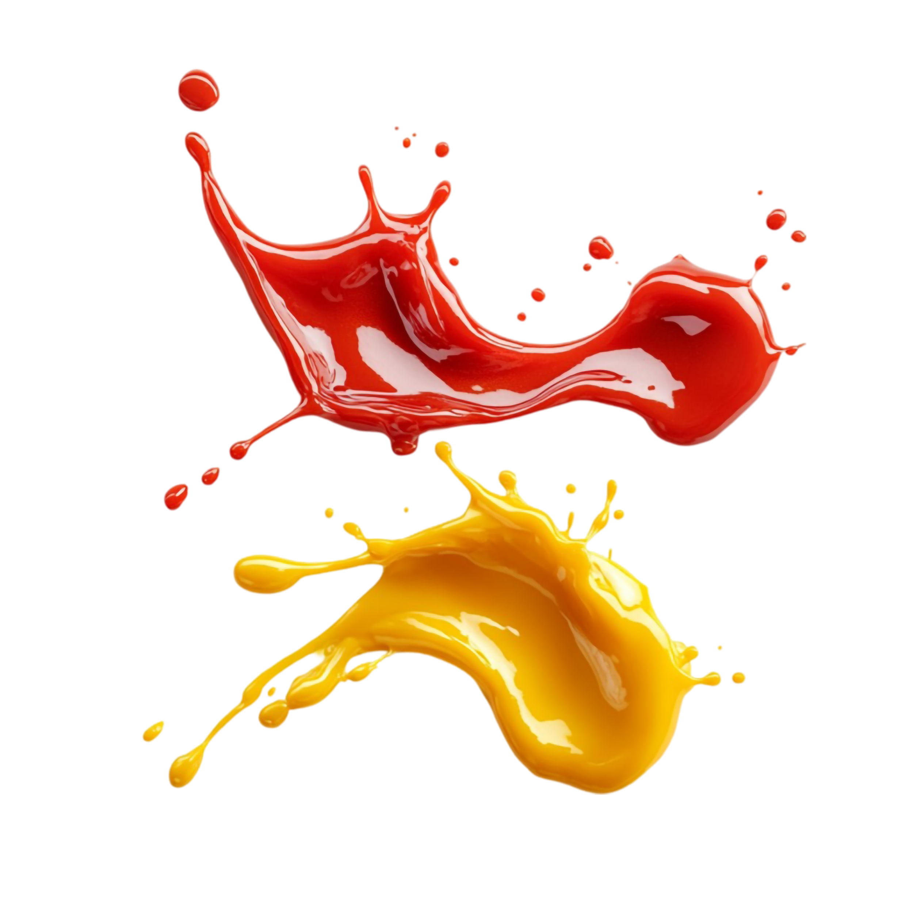

سسهای مخصوص برای فستفودها

- سسها نقش بسیار مهمی در طعمدهی به غذاهای فستفودی دارند.
- میتوانند سادهترین غذاها را به تجربهای متفاوت و لذتبخش تبدیل کنند.
۱. سسهای کلاسیک

۱.۱. کچاپ
کچاپ با پایهی گوجهفرنگی، طعم ترش و شیرین و ترکیب عالی با سیبزمینی، پیتزا و هاتداگ دارد.
۱.۲. مایونز
مایونز با بافتی کرمی، پایهی بسیاری از سسهای دیگر است و در همبرگر و سالاد کاربرد فراوان دارد.
۱.۳. خردل
سس خردل با طعم تند و اسیدی، مناسب برای هاتداگ و ساندویچها است.
۲. سسهای ترکیبی و خاص
- ۲.۱. هزار جزیره: ترکیب مایونز، کچاپ، ترشیجات و ادویه؛ مناسب برگر و سالاد.
- ۲.۲. باربیکیو: با طعم دودی و شیرین، گزینهای عالی برای گوشتهای گریلشده.
- ۲.۳. چیلی مایو: ترکیب مایونز و سس تند؛ برای ساندویچهای اسپایسی.
- ۲.۴. سیر: ترکیبی از سیر، مایونز و آبلیمو؛ محبوب در فستفودها.
- ۲.۵. رنچ: مایونز، دوغ و سبزیجات معطر؛ مخصوص دیپ و مرغ سوخاری.
- ۲.۶. آلفردو: سس خامهای مناسب برای پاستا و بعضی فستفودهای خاص.
- ۲.۷. ترشی (Relish): خیارشور، سرکه و ادویه؛ مناسب برای هاتداگ.
- ۲.۸. واسابی مایو: مایونز و واسابی؛ سسی تند و متفاوت برای ساندویچهای دریایی.
- ۲.۹. رومسکو: فلفل کبابی، بادام و سرکه؛ سسی اسپانیایی و دودی.
- ۲.۱۰. هریسا: سس تند آفریقایی با فلفل قرمز، سیر و زیره.
تاریخ انتشار: ۴ فروردین ۱۴۰۴